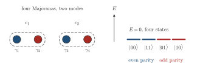
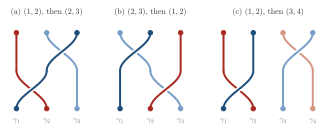

Advanced Quantum Materials 2027 · All lectures · Lecture notes
Session 5. Superconductivity, Nambu Representation and Majorana Physics
5.19 Topological quantum computing with Majoranas
Majorana modes get so much attention, beyond their own unusual properties, because of their proposed use in fault-tolerant quantum computing. Majoranas are non-Abelian anyons. Exchanging, or braiding, one Majorana around another does not only multiply the many-body ground state by a phase. It acts as a unitary matrix on a degenerate ground-state manifold, so the order in which different braiding operations are done matters, which means that the algebra does not commute, and this is what is called non-Abelian. This follows directly from the structure of the BdG Hamiltonian when more than two Majoranas are present.
For concreteness, four Majorana operators \(\gamma_1,\gamma_2,\gamma_3,\gamma_4\) can be combined again, with pairings of the type of (5.18), into two ordinary fermionic operators, which we can call artificial fermions, so a system with four Majoranas encodes two ordinary fermionic modes. The resulting many-body ground-state manifold, with the states empty, one mode filled, the other mode filled and both filled, is four-fold degenerate. All four states cost zero energy, by the same argument that made \(\gamma_1\) and \(\gamma_{2N}\) zero-energy modes in the Kitaev chain, and this degenerate manifold is the proposed computational basis for a topological qubit.

Four Majoranas form two ordinary fermion modes. With the total fermion parity fixed to even, how many ground states are available?
Show the answers
- A. ✗ False
This is false. A single ground state would give no qubit. With four Majoranas, \(|00\rangle\) and \(|11\rangle\) have even parity and the same zero energy, so there are two states.
- B. ✓ True
This is true. Two modes give \(2\times2=4\) states, all at zero energy. Only \(|00\rangle\) and \(|11\rangle\) have even parity, so two states remain for a fixed parity.
- C. ✗ False
This is false. The four states include \(|01\rangle\) and \(|10\rangle\) with odd parity. A move from \(|00\rangle\) to \(|01\rangle\) changes \(N\) by one, which no term of a superconductor does, so these are not reached.
Braiding two Majoranas, for example \(\gamma_1\) around \(\gamma_2\), acts on the ground-state manifold as a unitary
\[U_{12} = \exp\left(\frac{\pi}{4}\,\gamma_1\gamma_2\right), \tag{5.23}\]
which multiplies states by a relative phase built from \(e^{i\pi/4}\) times the Majorana product. The exact form is less important than what it implies. Two exchanges that share a Majorana do not commute. Braiding the pair \((1,2)\) and then the pair \((2,3)\) gives a different final state than braiding \((2,3)\) first and \((1,2)\) second, since \(\gamma_1\gamma_2\) and \(\gamma_2\gamma_3\) anticommute. Exchanges of disjoint pairs, such as \((1,2)\) and \((3,4)\), commute instead. This braid algebra that does not commute is what allows sequences of purely topological and geometric moves, which physically means moving Majoranas around one another, to implement non-trivial quantum logic gates. Since the resulting qubit is stored non-locally, divided between spatially separated Majoranas instead of being in one local degree of freedom, it is intrinsically resistant to local decoherence and to weak local disorder, and this robustness is the main reason for the interest in topological quantum computing. This material on braiding and quantum computing appears only in the slides and the transcript and has no counterpart in session5.ipynb. None of the sections of the notebook implement braiding dynamics or a qubit manifold, which is reasonable, since this is far from a static tight-binding diagonalization and it is a separate dynamical calculation.
Schematic Schematic 5.10 draws the three cases as worldlines, with time going up. The two exchanges that share a Majorana give two different arrangements, and the two disjoint exchanges give the same one.

Which two braiding operations give the same final state in either order?
Show the answers
- A. ✗ False
This is false. The braid \((1,2)\) is generated by \(i\gamma_1\gamma_2\) and \((2,3)\) by \(i\gamma_2\gamma_3\). These generators anticommute, like \(\sigma_z\) and \(\sigma_x\), so the two braids do not commute and the order changes the final state.
- B. ✓ True
This is true. The braids of \((1,2)\) and \((3,4)\) share no Majorana, so \(\gamma_1\gamma_2\) and \(\gamma_3\gamma_4\) commute and the order does not matter.
- C. ✗ False
This is false. These two share the Majorana \(\gamma_3\), so \(\gamma_2\gamma_3\) and \(\gamma_3\gamma_4\) anticommute. In the even sector \(i\gamma_3\gamma_4\) acts like \(\sigma_z\) and \(i\gamma_2\gamma_3\) like \(\sigma_x\), which do not commute.